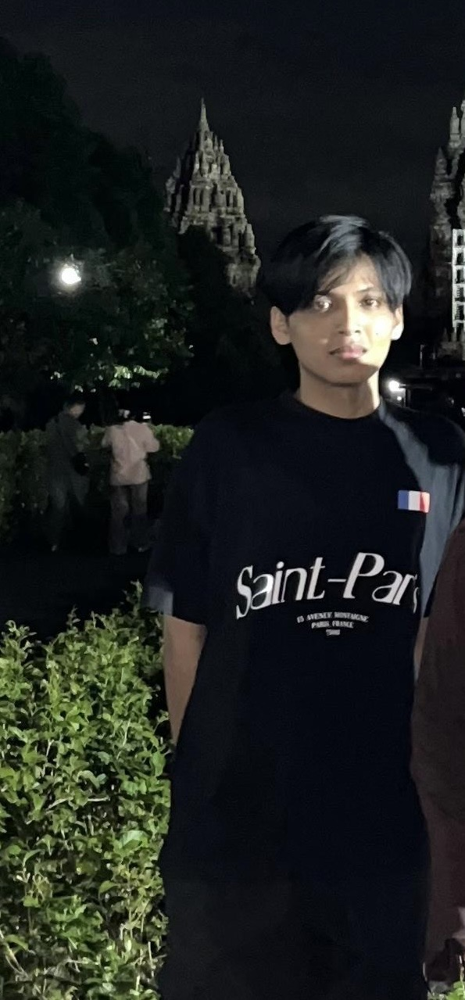

Saya mulai belajar coding pada tahun 2024 setelah lulus SMA dan melanjutkan pendidikan di Universitas Muhammadiyah Surakarta (UMS) jurusan Teknik Informatika. Selain belajar di perkuliahan, saya juga aktif mempelajari pengembangan website secara otodidak melalui YouTube, dokumentasi, dan berbagai project latihan. Saat ini saya fokus membuat website modern, responsive, dan clean menggunakan HTML & CSS.
Menjadi seorang developer yang tidak hanya memahami pengembangan website, tetapi juga mendalami bidang Cyber Security untuk meningkatkan keamanan sistem dan data digital. Saya ingin terus belajar, mengembangkan kemampuan, dan mengikuti perkembangan teknologi agar dapat menciptakan solusi digital yang modern, aman, dan bermanfaat.